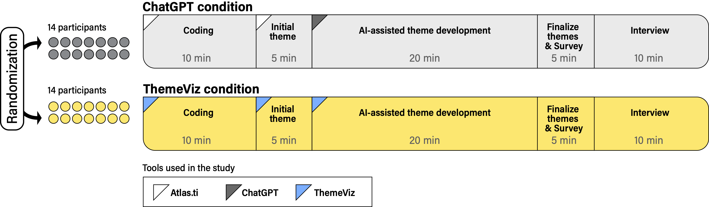

LLM-Enhanced Visual System for Theme Development

Background
Thematic analysis is a research method used to identify patterns or themes within qualitative data. It is widely used in scientific research, user research, and product development, but it is also notoriously time-consuming and laborious.


Figure. Six-phase framework (Braun and Clarke, 2012).
Previous computational research has largely focused on coding because it involves relatively clear tasks, such as labeling data with a predefined codebook. Theme development is harder to support. Searching for, reviewing, and defining themes require researchers to abstract, synthesize, and interpret meaning across a dataset.
This work becomes more challenging because researchers often create and compare multiple versions of themes before identifying the interpretation that best represents their data. LLMs can support this conceptual work by understanding text and developing candidate themes. More importantly, they may act as research collaborators by offering alternative interpretations of the data that researchers may not have initially considered.
ThemeViz investigates whether a purpose-built interface can turn these capabilities into meaningful human-AI collaboration during theme development.
Research Questions
How useful is ThemeViz for theme development compared with a conventional prompting interface such as ChatGPT?
To what extent does ThemeViz’s design encourage users to view its AI assistant as a collaborative partner in theme development compared with a traditional interface such as ChatGPT?
Design Goals
The following three design goals guided the system’s design.
Support user autonomy
Qualitative researchers often resist fully automated analysis and want to remain responsible for interpretation. ThemeViz therefore preserves manual coding and manual theme development so researchers maintain control of the analysis.
Promote sensemaking
Researchers often use visual media such as theme maps to understand relationships within data. Instead of returning long blocks of model-generated text, ThemeViz uses interactive bubble charts to make themes easier to inspect and compare.
Reduce prompting overhead
Passing long text, metadata, and prior analysis back and forth through a chat interface is burdensome. ThemeViz centrally manages transcripts, user-generated codes, metadata, and prompts so researchers can focus on developing themes.
System Design
ThemeViz supports the full analysis workflow while focusing AI assistance on searching for, reviewing, and defining themes. Researchers retain the ability to code and develop themes manually, then work with GPT-4 to generate and refine alternative theme structures.
Manual coding
On the coding page, users highlight text segments that capture key ideas. They can assign new codes or select existing codes from a dropdown menu.
Manual theme development
On the left side of the page, ungrouped code–text pairs include both coded and uncoded data, with codes highlighted in yellow. Users create themes by selecting “Add Theme,” then drag and drop code–text pairs from the left panel into a theme box.
Iterative theme development with AI
The left side of the page presents theme titles, theme explanations, and the code–text pairs assigned to each theme. On the right, an interactive bubble chart visualizes themes and their code–text pairs.
Iterative Theme Development with AI
Interface details

Theme details: The left side presents theme titles, explanations, and the code–text pairs assigned to each theme.
Interactive themes and codes: On the right, outer circles represent themes and color-coded bubbles represent code–text pairs. Linked interactions highlight connections between the two panels.
Prompt the AI: Users can describe how they want the AI to generate themes in the text input box.
Generate themes: Selecting “AI assistance” generates a new set of themes.
Set theme count: The slider adjusts the desired number of themes.
Adjust theme granularity
A slider changes the requested number of themes. A smaller number produces broader, higher-level themes; a larger number produces more specific and granular themes.
Guide the AI with custom prompts
Researchers can direct the model toward a particular analytical lens. For example, they can ask it to focus on an interviewee’s relationship with her parents and her personality, then inspect the newly generated themes.
Examine theme quality
Researchers can interact with the bubble chart at any time to inspect which codes belong to each AI-generated theme and judge whether the proposed structure is coherent.
Study
We conducted a between-subjects study with 28 participants, randomly assigning 14 participants to each condition. Both conditions used the same GPT-4 model so that the comparison focused on interaction design rather than model capability.
ChatGPT condition
Participants used Atlas.ti for coding and initial theme development, then used ChatGPT for AI-assisted theme development.
ThemeViz condition
Participants used ThemeViz for coding, initial theme development, and AI-assisted theme development within one integrated workflow.
Each session included 10 minutes of coding, 5 minutes of initial theme development, 20 minutes of AI-assisted theme development, 5 minutes to finalize themes and complete a survey, and a 10-minute interview.

Findings
RQ1: ThemeViz was more useful than a traditional ChatGPT interface
ThemeViz users created more theme iterations and developed more diverse perspectives from the dataset. They also found that its interactive visualization helped them comprehend the data and rated the visual output as more useful than ChatGPT’s text-based responses.

Together, these differences suggest that ThemeViz supported both exploration and sensemaking: participants considered more possible theme structures while using the visualization to understand and compare the underlying data.
RQ2: Interaction design shaped perceptions of collaboration
Participants rated ThemeViz’s assistant significantly higher as a collaborator and in its ability to collaborate than the same AI model presented through ChatGPT.

Because both conditions used GPT-4, these results suggest that interaction design—not model capability alone—shaped how collaborative the AI felt. Even with these higher ratings, participants did not fully consider the AI a true collaborator. Our interviews revealed concerns about the AI’s lack of agency and responsibility. Participants also pointed to limitations in the AI’s passive communication style. They felt that simply seeing potential themes was not enough to support deeper thinking.
“AI assistant does not have its own ‘mindset’ while human collaborators have their own.”
P10
“Being a collaborator implies that it has agency and can share responsibility for those mistakes or incorrect information. However, I don’t think it has that responsibility.”
P23
“Good collaboration is like two people who either argue with each other or challenge each other to think, to create something new.”
P24
Design Implications
Support researcher autonomy
AI lacks agency and responsibility. When AI can produce negative or misleading outcomes, researchers need clear control over their analytical process and final interpretations.
Design for proactive communication
Questions and constructive challenges can deepen reflection. Future systems should explore questioning AI agents that prompt researchers to examine assumptions and think critically during theme development.